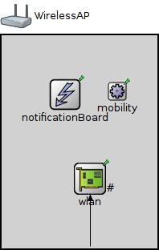
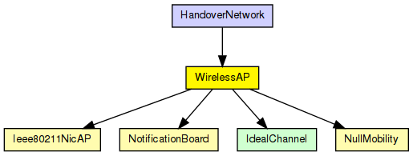
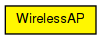

Models a 802.11 Access Point. It can be used in conjunction with WirelessHost, or any other host model containing WirelessNicSTA.
See also: WirelessAP, WirelessAPSimplified, WirelessAPWithEth, WirelessAPWithEthSimplified
See also: WirelessHost, WirelessHostSimplified
See also: MobileHost, MFMobileHost
The following diagram shows usage relationships between types. Unresolved types are missing from the diagram.
The following diagram shows inheritance relationships for this type. Unresolved types are missing from the diagram.
| Name | Type | Description |
|---|---|---|
| HandoverNetwork | network | (no description) |
| Name | Value | Description |
|---|---|---|
| node | ||
| labels | node | |
| display | i=device/accesspoint |
| Name | Direction | Size | Description |
|---|---|---|---|
| radioIn | input |
| Name | Type | Default value | Description |
|---|---|---|---|
| wlan.mgmt.ssid | string | "SSID" | |
| wlan.mgmt.beaconInterval | double | 100ms | |
| wlan.mgmt.frameCapacity | int | 100 |
maximum queue length |
| wlan.mgmt.numAuthSteps | int | 4 |
use 2 for Open System auth, 4 for WEP |
| wlan.mac.address | string | "auto" |
MAC address as hex string (12 hex digits), or "auto". "auto" values will be replaced by a generated MAC address in init stage 0. |
| wlan.mac.maxQueueSize | int |
max queue length in frames; only used if queueModule=="" |
|
| wlan.mac.bitrate | double | ||
| wlan.mac.rtsThresholdBytes | int | 2346B |
longer messages will be sent using RTS/CTS |
| wlan.mac.retryLimit | int | -1 |
maximum number of retries per message, -1 means default |
| wlan.mac.cwMinData | int | -1 |
contention window for normal data frames, -1 means default |
| wlan.mac.cwMinBroadcast | int | -1 |
contention window for broadcast messages, -1 means default |
| wlan.mac.mtu | int | 1500 | |
| wlan.radio.channelNumber | int | 0 |
channel identifier |
| wlan.radio.transmitterPower | double | 20mW |
power used for transmission of messages (in mW) |
| wlan.radio.bitrate | double |
(in bits/s) |
|
| wlan.radio.thermalNoise | double | -110dBm |
base noise level (dBm) |
| wlan.radio.pathLossAlpha | double | 2 |
used by the path loss calculation |
| wlan.radio.shadowingDeviation | double | 0dB |
used by the shadowing model calculation |
| wlan.radio.snirThreshold | double | 4dB |
if signal-noise ratio is below this threshold, frame is considered noise (in dB) |
| wlan.radio.sensitivity | double |
received signals with power below sensitivity are ignored |
|
| mobility.x | double | -1 |
start x coordinate (-1 = display string position, or random if it's missing) |
| mobility.y | double | -1 |
start y coordinate (-1 = display string position, or random if it's missing) |
// // Models a 802.11 Access Point. It can be used in conjunction with // WirelessHost, or any other host model containing WirelessNicSTA. // // @see WirelessAP, WirelessAPSimplified, WirelessAPWithEth, WirelessAPWithEthSimplified // @see WirelessHost, WirelessHostSimplified // @see MobileHost, MFMobileHost // module WirelessAP { parameters: @node(); @labels(node,wireless-node); @display("i=device/accesspoint"); gates: input radioIn @directIn; submodules: notificationBoard: NotificationBoard { parameters: @display("p=79,74"); } wlan: Ieee80211NicAP { // see also Ieee80211NicAPSimplified parameters: @display("p=110,179;q=queue"); } mobility: NullMobility { parameters: @display("p=144,70"); } connections allowunconnected: radioIn --> { @display("m=s"); } --> wlan.radioIn; }